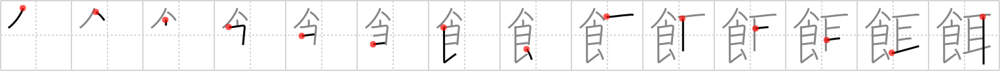

餌
← →
feed

Reading:
On-Yomi: ジ、ニ — Kun-Yomi: え、えば、えさ、もち
Heisig story:
Food . . . ear. The sense of the key word here is that of bait or feed for animals.
Koohii stories:
1) [mantixen] 15-3-2007(71): Food made of ears is animal feed.
2) [mairov] 22-3-2008(30): Do you know Mike Tayson favorite feed? Ears! He eats ears!
3) [tanaquil] 27-3-2010(28): When I bring out the can opener to open the food, my cat's ears prick right up. Feeding time!
4) [n1williams] 14-1-2010(9): Pavlov's dog knew that FEED had been set out for him to EAT whenever his EARS heard the bell.
5) [richcoop] 27-7-2009(8): Feed him until the FOOD comes out of his EARS.